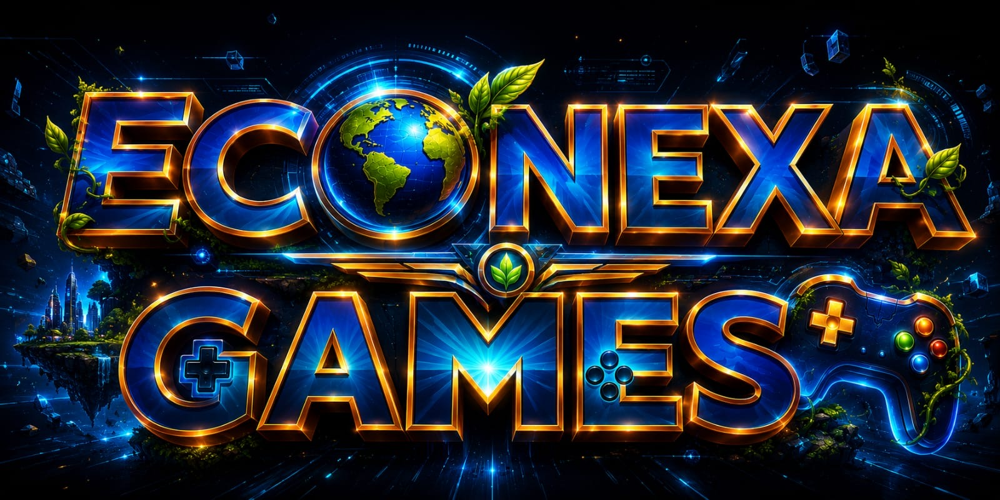
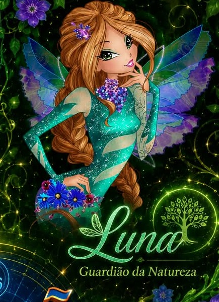
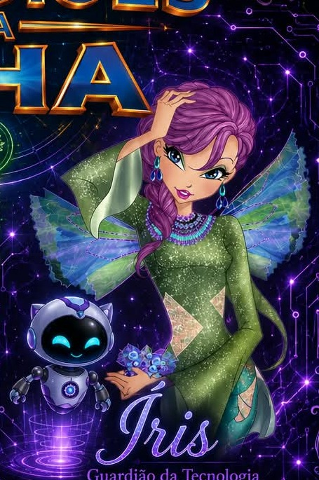
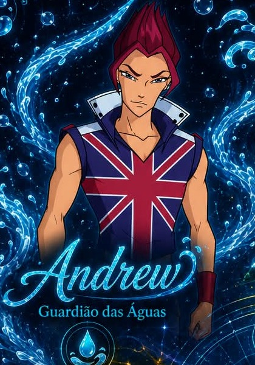
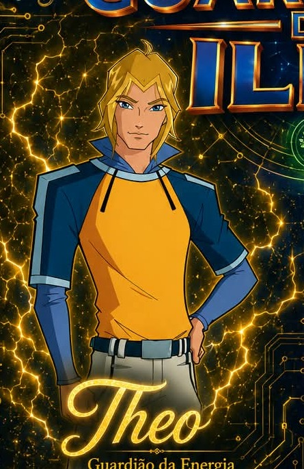
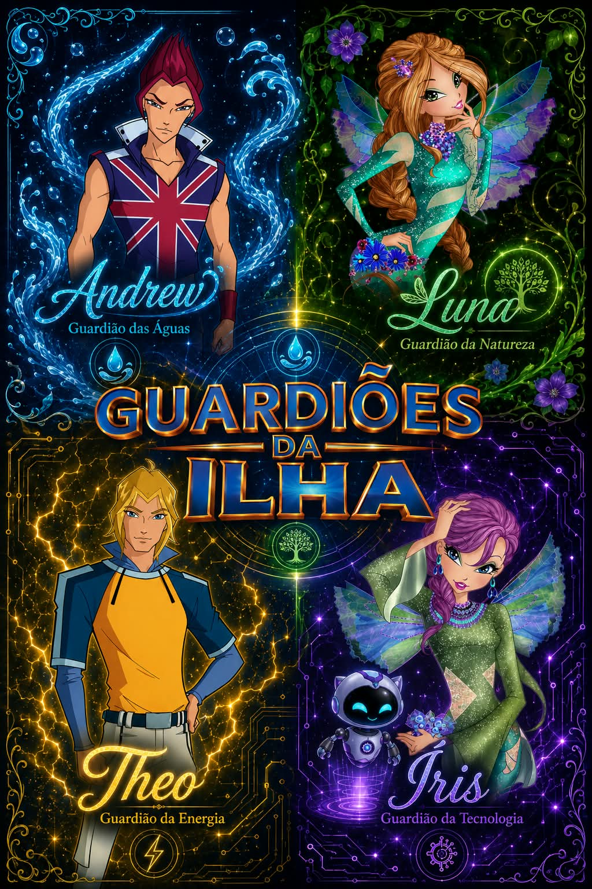
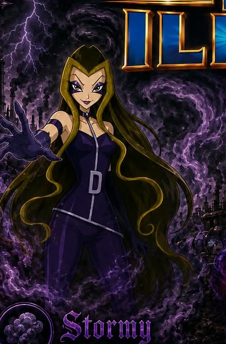
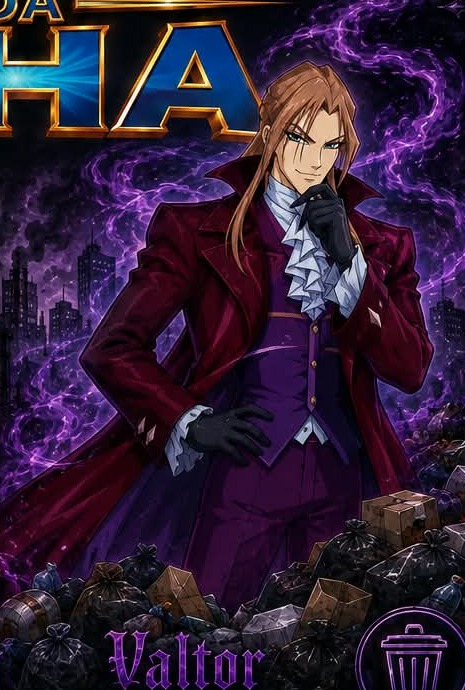
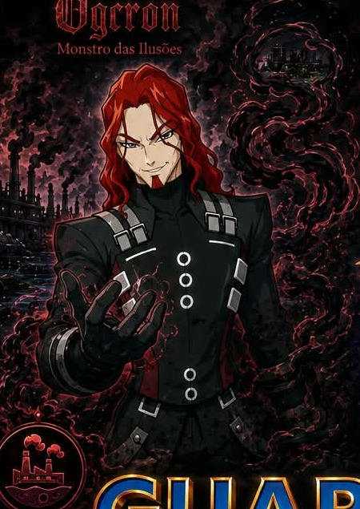
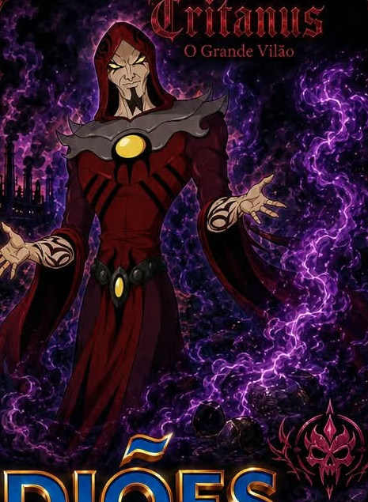

ECO NEXA GAMES • SÃO LUÍS, MARANHÃO
Guardiões
da Ilha.
Uma aventura de fantasia onde natureza, tecnologia e ação se unem para enfrentar as forças da Poluição.

O UNIVERSO
Um equilíbrio entre
natureza + tecnologia + pessoas.
A Energia Nexa mantém o equilíbrio da ilha. Quando a degradação aumenta, a Poluição se manifesta em criaturas cada vez mais poderosas. O jogador aprende, investiga e transforma cada escolha em uma ação.
OS GUARDIÕES
Quatro poderes.
Uma missão.
Escolha quem domina cada desafio. Cada Guardião possui uma habilidade ligada a um problema ambiental específico.

GUARDIÃ DA NATUREZA
Luna
↳ REGENERARRecupera áreas degradadas e devolve vitalidade aos ambientes.
GUARDIÃ DA TECNOLOGIA
Íris
↳ ANALISARUtiliza a NEX para identificar problemas, pistas e possíveis soluções.
GUARDIÃO DAS ÁGUAS
Andrew
↳ PURIFICARReduz a contaminação de áreas aquáticas e protege os recursos hídricos.
GUARDIÃO DA ENERGIA
Theo
↳ OTIMIZARReduz desperdícios e melhora a eficiência energética dos espaços.
A EQUIPE COMPLETA
Quatro forças.
Um só equilíbrio.
Natureza, águas, energia e tecnologia trabalham juntas para recuperar a ilha.
Ver sistema de combate →VILÕES DA POLUIÇÃO
Quando o problema
ganha um rosto.
Eles não nasceram do nada. São manifestações da degradação ambiental e ficam mais fortes conforme os problemas se acumulam.

Stormy
Dama da Tempestade
Representa fumaça, emissões e poluição atmosférica.FRAQUEZA / REDUÇÃO DA POLUIÇÃO
Valtor
Senhor do Lixo
Representa excesso de resíduos e descarte inadequado.FRAQUEZA / RECICLAGEM
Ogron
Monstro das Ilusões
Representa contaminação e degradação dos ambientes aquáticos.FRAQUEZA / LIMPEZA E PRESERVAÇÃO
Tritanus
O Grande Vilão
Quanto maior a degradação, maior é sua força.FRAQUEZA / COMBINAÇÃO DOS 4 GUARDIÕESO MUNDO
Explore
São Luís.
Uma representação ficcional inspirada na cidade, criada para transformar território, cultura e problemas ambientais em desafios interativos.
✦
PROGRESSÃO
Recupere a ilha,
uma missão por vez.
MISSÃO 01 • CENTRO HISTÓRICO
O Problema dos Resíduos
Resíduos estão espalhados pela área. Identifique o problema, organize a coleta e enfrente Valtor.
PROGRESSÃO
Suas escolhas
deixam marcas.
SISTEMA DE COMBATE
Combater a poluição
é resolver o problema.
O confronto transforma ações ambientais em mecânicas simples. Escolha a habilidade certa e reduza a força do problema.
APRENDER TAMBÉM É PROTEGER
Problemas reais.
Desafios interativos.
O jogo transforma problemas ambientais em desafios: identificar, decidir, agir e observar a recuperação do ambiente.
Reduzir, reutilizar e separar corretamente.
Evitar a contaminação e preservar recursos hídricos.
Usar recursos de forma consciente e eficiente.
Preservar e recuperar ambientes degradados.
TECNOLOGIA NEX
NEX — Inteligência
da equipe.
NEX é uma pequena inteligência artificial utilizada por Íris para analisar informações durante as missões.
MINIGAME
ECO BREAKER.
Quebre os blocos da poluição, mantenha a energia em movimento e recupere o equilíbrio.
ECONEXA GAMES
A equipe por trás
da ilha.
A JORNADA COMEÇA AQUI
São Luís precisa
de seus Guardiões.
Explore. Descubra. Recupere. Proteja.
Voltar ao início ↑